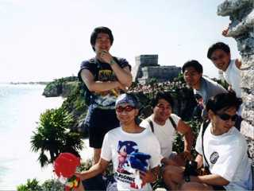
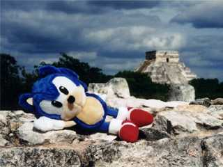
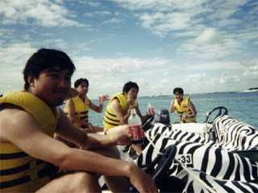
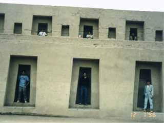
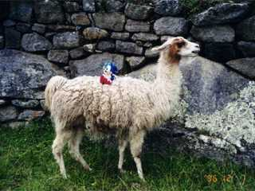
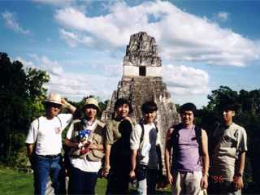

| ソニックチーム南米へ行く（１） | |
|
[ソニックチーム南米へ行く(2)]
1996年秋。『ナイツ』開発終了から約半年。 ソニックチームの面々は新たなる作品づくりに取りかかろうとしていた。 その作品とは「ソニック」の完全新作である。
開発スタートにあたって、チームの中心となるメンバー６人は、ソフトの構想を練るため海外取材を敢行した。その行き先とは"中南米"であった。
ソニックの舞台となる世界。それは太陽の光あふれる南の島にはじまり、ネオンきらびやかなカジノ街、そして密林に潜む古代遺跡。
取材旅行の計画は速やかに進められ、11月実行に移された。行き先は大きく分けて２箇所。 つづく...（のかな？） |  トゥルムで全員集合 |
マチュピチュの現地人 |
|  ティカルでお昼寝 |
カンクンで晩御飯 |
|  海にも行ったよ |
 とりあえずハマってみた |
|  リャマに乗っておでかけ |
 俺たち！ソニックチーム！！ |
| SONIC TEAM 1998 | |